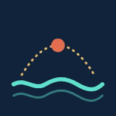

Astrowaves
Check the stars like you check the weather.
Astrowaves finds good times in your local sky for the things you want more of, and lets you know before they come. Charlie Cross, an astrologer in Austin, built it, and you are one of the first people to try it.
Two ways to use it
In your browser, on any phone or computer
Open the app and answer three short questions. On an iPhone, tap the Share button and choose Add to Home Screen so it opens like any other app. In the browser, reminders come through your calendar.
Open AstrowavesOn iPhone, with widgets and notifications
- Install Scriptable from the App Store (free).
- Open it, tap +, paste the code below, and name the script Astrowaves.
- Run it, and allow location, calendar and notifications.
- For a widget, add a Scriptable widget to your Home Screen or Lock Screen and choose Astrowaves. Type
nowunder Parameter for one that shows what the current moment suits.
// Astrowaves loader: fetches the latest Astrowaves each run and keeps a copy for offline.
const fm = FileManager.local()
const path = fm.joinPath(fm.documentsDirectory(), 'astrowaves-cache.js')
let code = null
try {
const req = new Request('https://compass.day/today/starswell.js')
req.timeoutInterval = 10
code = await req.loadString()
if (!code.includes('Starswell.reading')) code = null
else fm.writeString(path, code)
} catch (e) {}
if (!code && fm.fileExists(path)) code = fm.readString(path)
if (!code) throw new Error('Could not load Astrowaves. Check your connection and run it again.')
const AsyncFunction = Object.getPrototypeOf(async function () {}).constructor
await new AsyncFunction(code)()
What to try over two weeks
- Pick two things to make room for: one you look forward to and one you keep putting off.
- When a reminder comes and you can go, go. Afterward, Today asks how it went, and one tap answers.
- When you have a free hour, open Now and see what the moment suits.
- Whenever something confuses you, feels wrong or works, use Tell Charlie under You. A wave that didn't fit has its own button.
At the end, Charlie will ask you about a time the app changed what you actually did, so keep an eye out for those.
Your information
What you tell Astrowaves, your calendar and your record stay on your device. A note you send with Tell Charlie goes to him with the screen you were on and your screen size, and nothing else.
Questions? Ask Charlie directly.